FastAPI Fundamentals, Setup & Project Structure
What is FastAPI?
In this note you build your first FastAPI application step by step, the way a developer does it in real life: learn a little, write code right away, run it, look at the output, then understand what happened.
FastAPI is a Python library (framework) that helps you build APIs. An API (Application Programming Interface) is a way for one program to ask another program for data. When a mobile app shows your profile, it asks an API “give me this user’s details”, and the API sends them back.
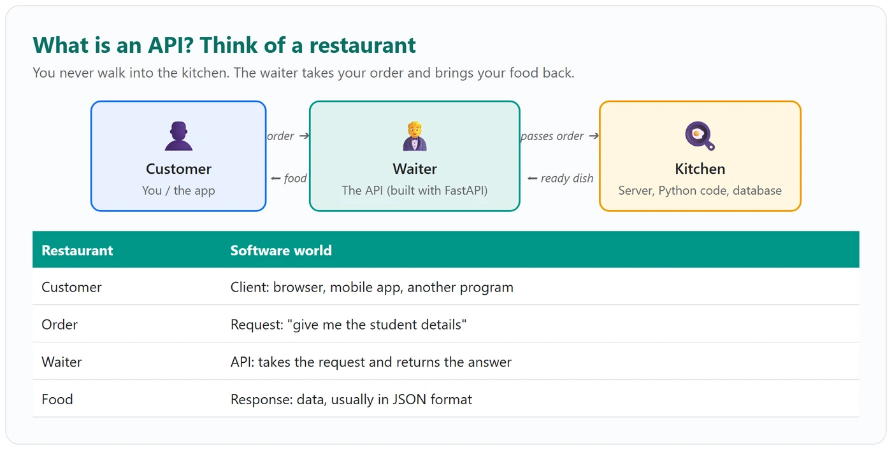
What problem does FastAPI solve? Writing an API from scratch means handling web requests, reading URLs, converting data and handling errors yourself. FastAPI does all of this for you. You simply write normal Python functions.
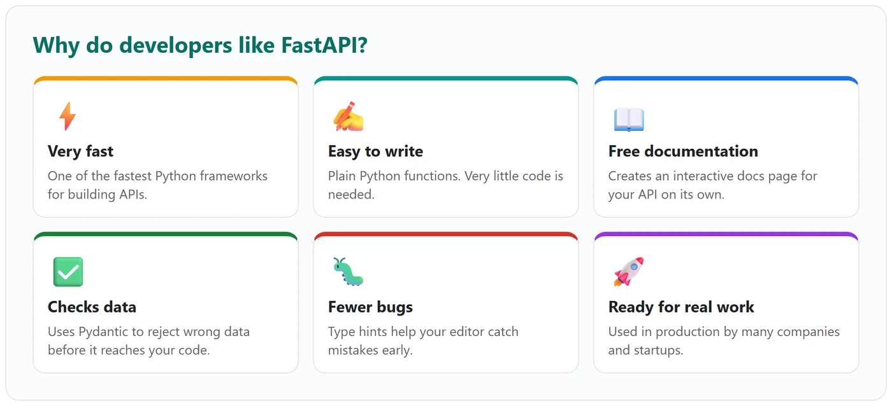
Where is FastAPI used?
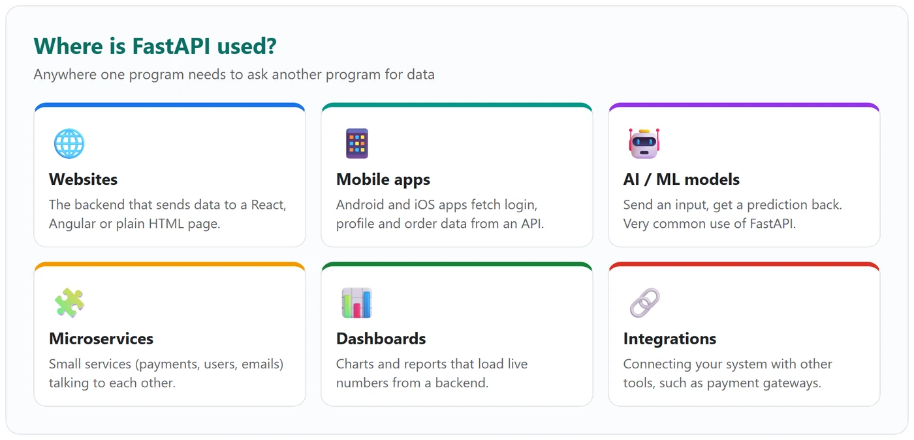
Frontend
What the user sees: buttons, pages, screens.
Backend
The hidden part that stores data and does the work. FastAPI is used to build the backend.
How a FastAPI application works
Every time someone uses your API, the same simple round trip happens:
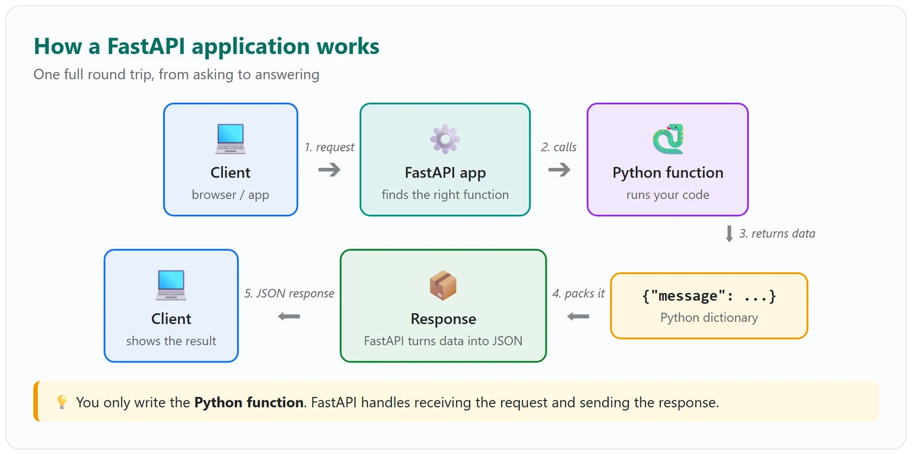
- 1Client sends a requesta browser or an app asks, for example, “give me the home page data”.
- 2FastAPI reads the requestand finds the Python function that should handle it.
- 3Your Python function runsand returns some data.
- 4FastAPI converts that data into JSONand sends it back as the response.
Keep this picture in mind. Everything you build in this note is just this flow, step by step.
Setting up the project
Create the project folder
First, create a folder for the project. Open the terminal in VS Code (Terminal → New Terminal) and run:
mkdir fastapi-project
cd fastapi-projectmkdir= make directory: creates a new folder.cd= change directory: moves you inside that folder.
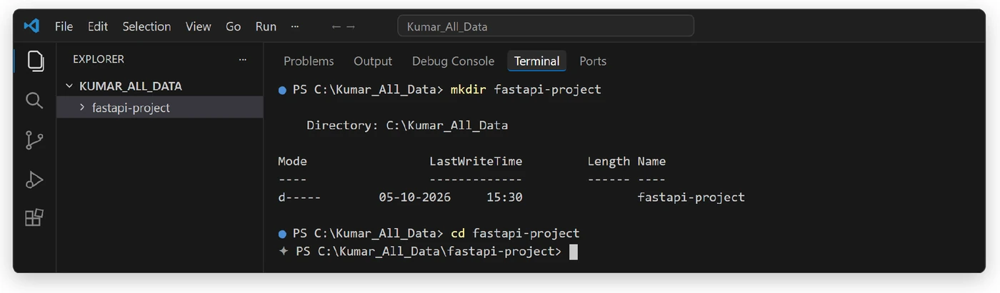
fastapi-project>.fastapi-project/ is simply the workspace for the application. All your files will live here.
Create a virtual environment
A virtual environment is a private copy of Python just for this project. Packages you install here stay inside this project only.
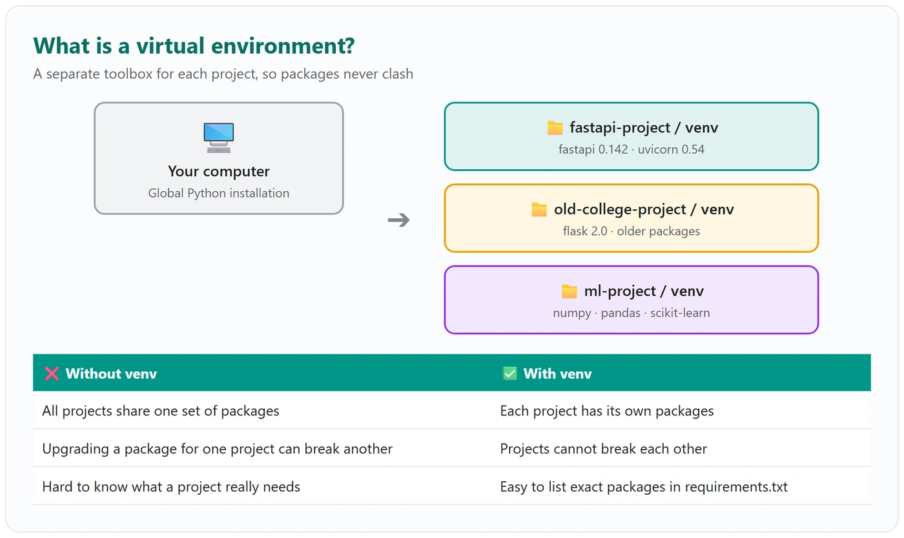
Create it with this command:
python -m venv venvpython -m venv= run Python’s built-in venv tool.- The last
venv= the name of the folder it creates. (You can pick any name, butvenvis the common choice.)
Now activate it, so the terminal starts using it:
| Operating system | Activate |
|---|---|
| Windows | venv\Scripts\activate |
| Linux / macOS | source venv/bin/activate |
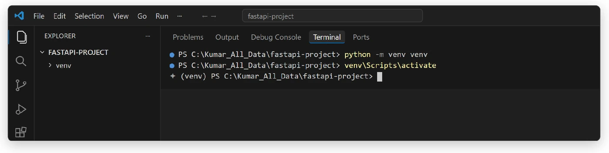
(venv), and a venv folder appears in the Explorer.How do you know it worked? Look at the start of the terminal line. After activation, (venv) appears in front:
Before: PS C:\Kumar_All_Data\fastapi-project>
After: (venv) PS C:\Kumar_All_Data\fastapi-project>Set-ExecutionPolicy -Scope CurrentUser RemoteSignedInstalling FastAPI and Uvicorn
You need two packages. Install them one by one:
pip install fastapi
pip install uvicornOr install both with one command:
pip install fastapi uvicorn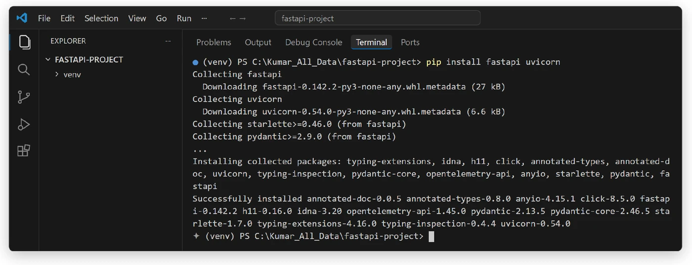
pip also installs some helper packages that FastAPI needs, such as starlette (the web toolkit underneath) and pydantic (data validation). That is normal.
Understand the two packages
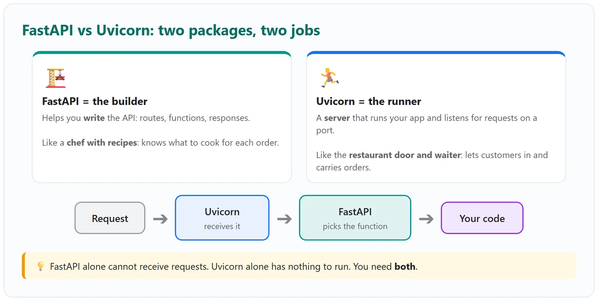
| Package | Job | Simple meaning |
|---|---|---|
| FastAPI | Helps you build the API | Where you write routes and functions |
| Uvicorn | Runs the FastAPI application | A server that waits for requests and passes them to FastAPI |
Verify the installation
Check what is installed in the venv:
pip list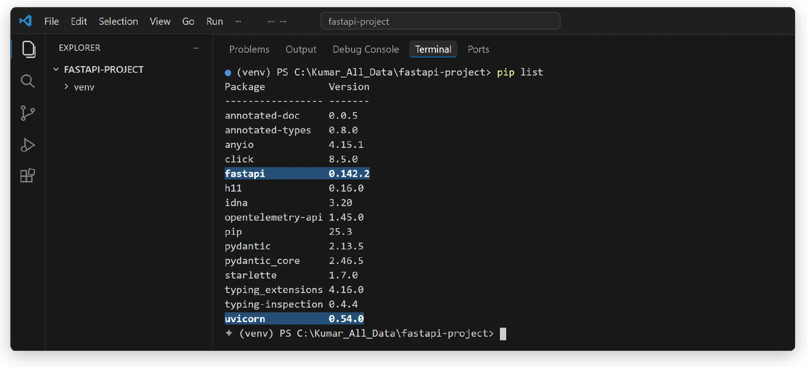
fastapi 0.142.2 and uvicorn 0.54.0 are in the list, next to helpers like starlette and pydantic.If you can see fastapi and uvicorn in the list, you are ready to write code.
pip install "fastapi[standard]", which installs FastAPI with Uvicorn and a few extras in one go. Installing the two packages separately, as above, works just as well.Your first FastAPI application
The environment is ready. Now create a new file named main.py inside the project folder:
fastapi-project/
│
├── venv/
│
└── main.pyStart with the smallest possible FastAPI application:
from fastapi import FastAPI
app = FastAPI()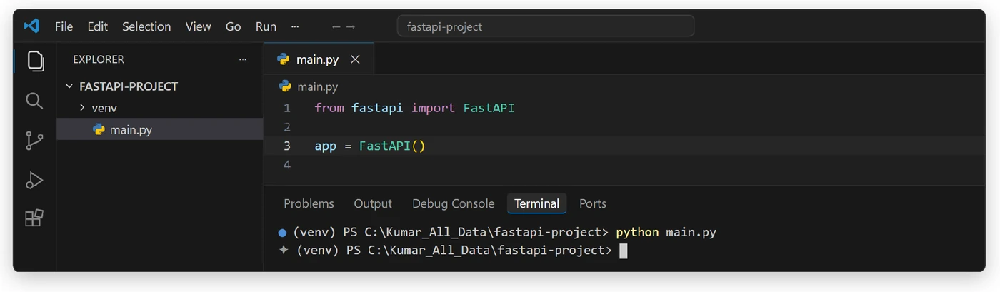
python main.py runs and returns straight to the prompt: no output, no server.Running it with python main.py prints nothing, and that is expected. You have created the app, but nobody is running it as a server yet. You will do that with Uvicorn in a moment.
Understand the code
from fastapi import FastAPIThis line brings the FastAPI class from the fastapi package into your file.
app = FastAPI()This line creates the FastAPI application instance and stores it in a variable named app.
FastAPI is like a blueprint. FastAPI() builds one real application from that blueprint, and app is that real application. It will hold all your routes and settings.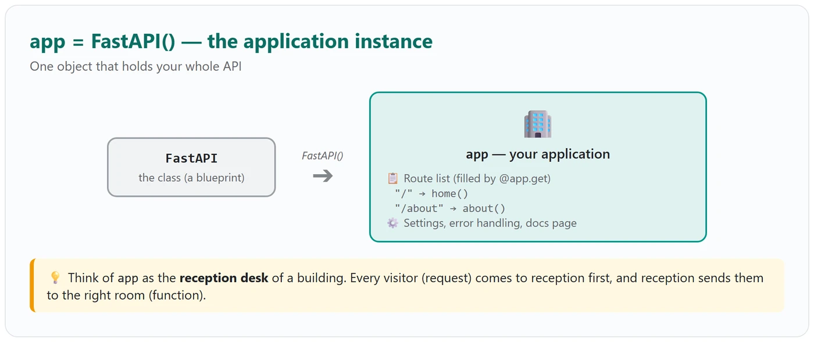
app as the reception desk: every visitor (request) comes there first and is sent to the right room (function).Your first route
A route connects a URL path (like /) to a Python function. When someone visits that path, the function runs and its return value becomes the response. Add these lines below app = FastAPI():
@app.get("/")
def home():
return {"message": "Hello FastAPI"}Complete code of main.py:
from fastapi import FastAPI
app = FastAPI()
@app.get("/")
def home():
return {"message": "Hello FastAPI"}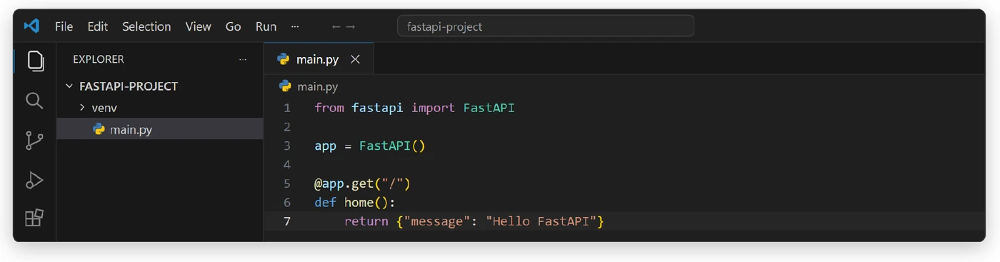
main.py in VS Code: seven lines.Parts of the route
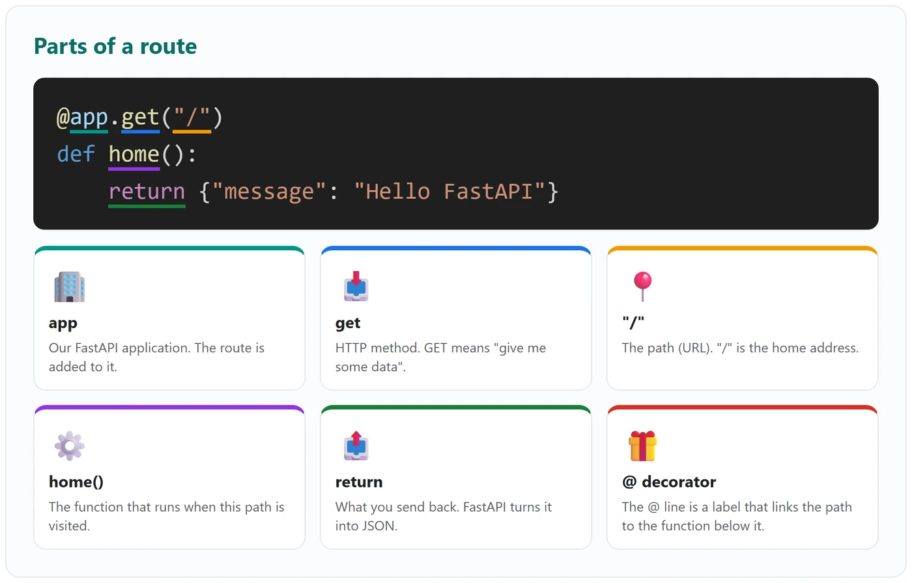
@ decorator, app, get, the path "/", the function home() and what it returns.Understand the flow
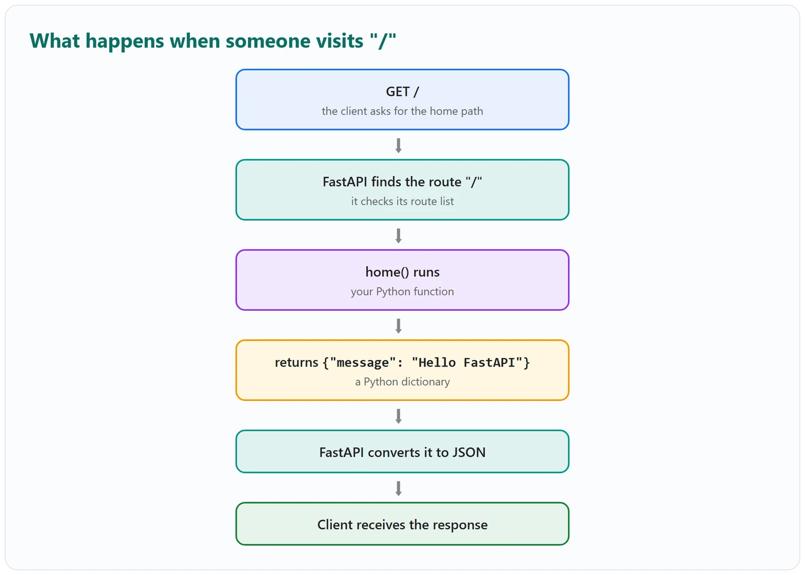
home() runs → returns a dict → converted to JSON → client receives it.Running the app with Uvicorn
Your code is ready. Now ask Uvicorn to run it. Make sure the venv is active, then run:
uvicorn main:app --reload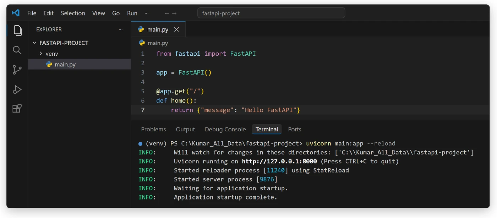
The important line is Uvicorn running on http://127.0.0.1:8000. Your API is now live on your own computer.
Understand the command
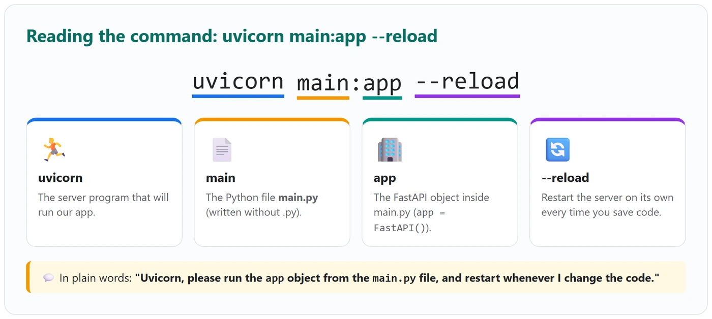
app object from the main.py file, and restart whenever I change the code.”So uvicorn main:app means: run the app object from the main.py file using Uvicorn.
127.0.0.1means this computer (also called localhost).8000is the port: like a door number on your computer where the server listens.- To stop the server, click in the terminal and press Ctrl + C.
Testing your first API
Open your browser and go to:
http://127.0.0.1:8000/Expected output:
{
"message": "Hello FastAPI"
}Now look at the terminal. Uvicorn writes one log line for every request it receives:
home() function returned.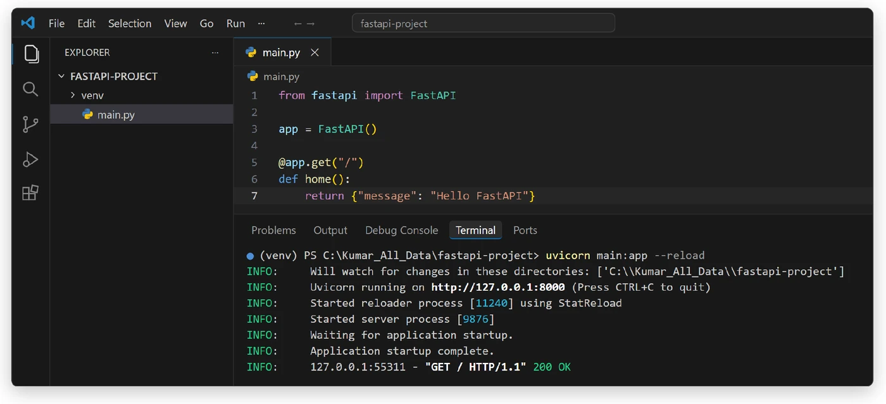
"GET / HTTP/1.1" 200 OK."GET / HTTP/1.1" 200 OK means: someone asked for / using GET, and the server answered successfully (200 OK).
The complete journey
This is the most important picture of this note. It shows everything that happened when you pressed Enter in the browser:
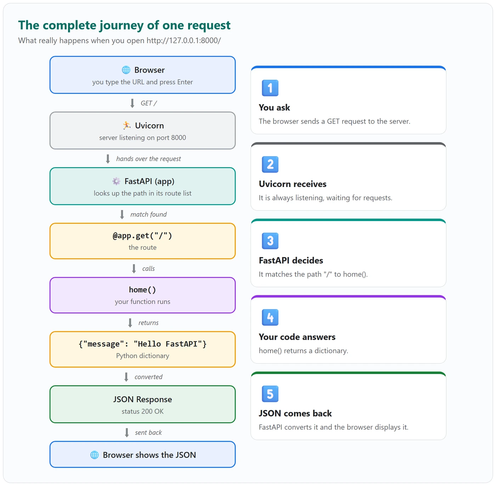
http://127.0.0.1:8000/docs. FastAPI generates interactive documentation for every route automatically, and you can try each one from there.The application instance, and more routes
You have now used app yourself, so let’s understand it properly.
What is app?
app = FastAPI()app is your whole API in one object. Uvicorn runs it, and every route is stored inside it.
Why do we need it?
Routes are registered (added) to the application using app:
@app.get("/")@app.get means “add this route to app”. Without app, the route would have nowhere to go, and Uvicorn would have nothing to run.
Add more routes
Add two more routes to main.py:
@app.get("/about")
def about():
return {"message": "About Page"}
@app.get("/contact")
def contact():
return {"message": "Contact Page"}Save the file. Because of --reload, Uvicorn restarts by itself. Now test all three paths in the browser:
http://127.0.0.1:8000/
http://127.0.0.1:8000/about
http://127.0.0.1:8000/contact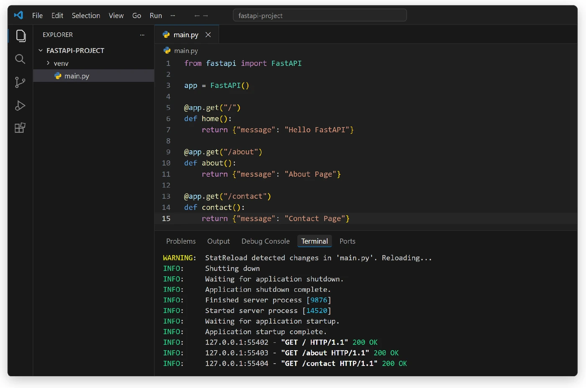
200 OK line per path.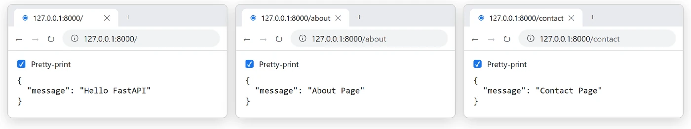
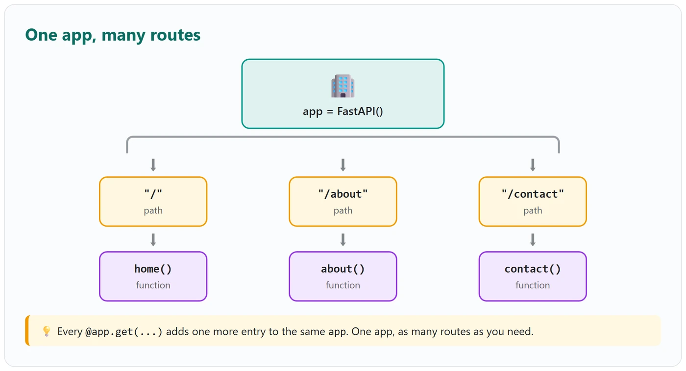
@app.get(...) adds one more entry to the same app. One app, as many routes as you need.Exploring responses
Let’s experiment. Change what home() returns, save, and refresh the browser each time.
Return a string
@app.get("/")
def home():
return "Hello"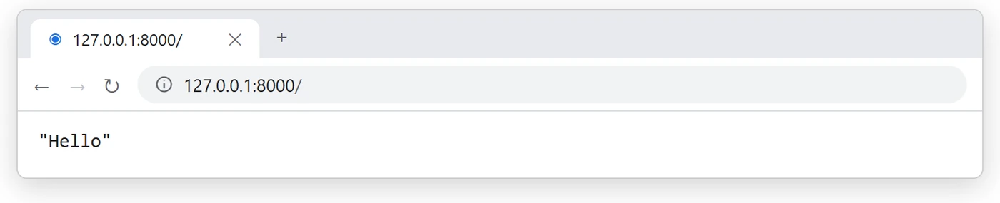
"Hello" keeps its quotes: FastAPI sent the text as a JSON string.The browser shows "Hello" with quotes. FastAPI sent the text as a JSON string.
Return a dictionary
@app.get("/")
def home():
return {"message": "Hello"}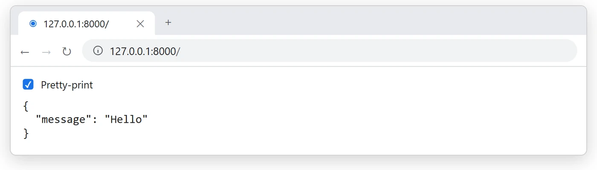
A dictionary becomes a JSON object, with keys and values. This is the most common type of response.
Return multiple values
@app.get("/")
def home():
return {
"name": "Rahul",
"age": 21,
"course": "BCA"
}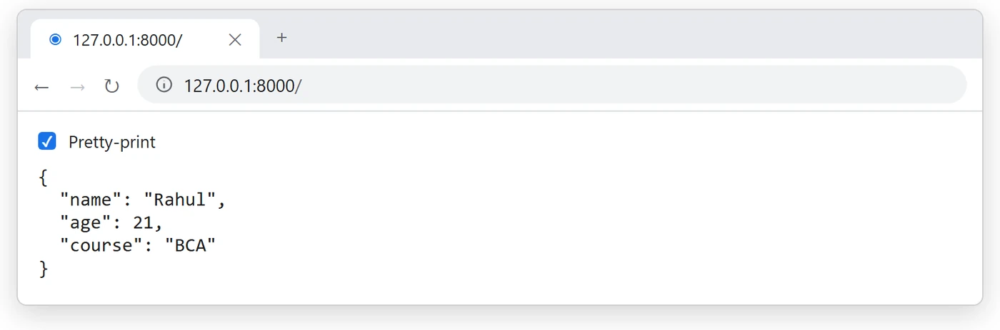
21 has no quotes (a number); the text values have quotes.To send many values, put them all in one dictionary. Notice that 21 stays a number (no quotes), while text gets quotes.
How Python data becomes JSON
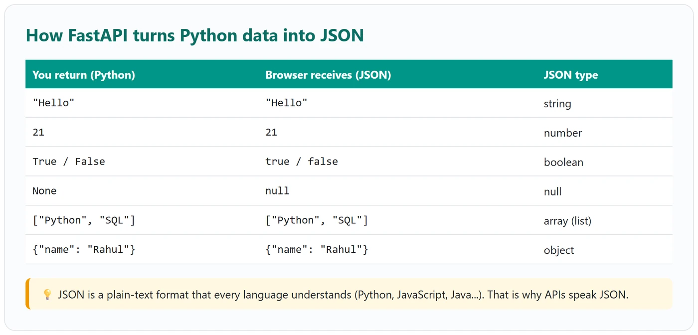
Exploring invalid routes: 404
What happens if you visit a path that does not exist? Try:
http://127.0.0.1:8000/hello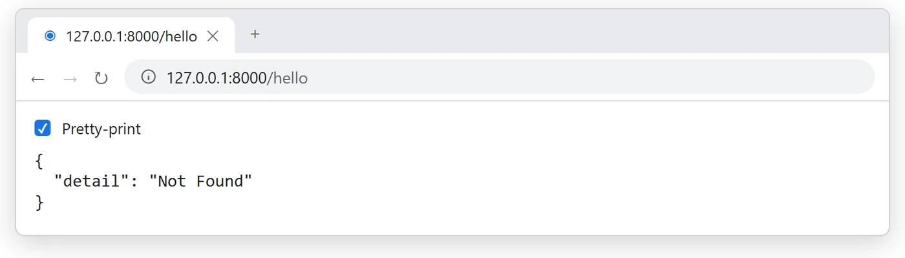
{"detail": "Not Found"}.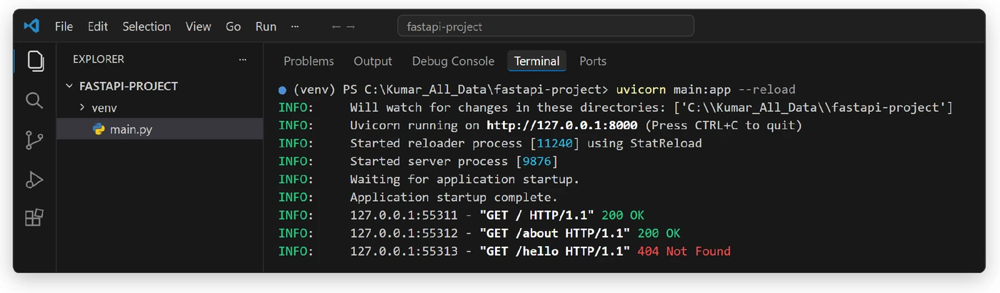
404 Not Found.{
"detail": "Not Found"
}Why does FastAPI return 404?
You never wrote @app.get("/hello"). FastAPI checks its route list, does not find /hello, and replies with 404 Not Found.
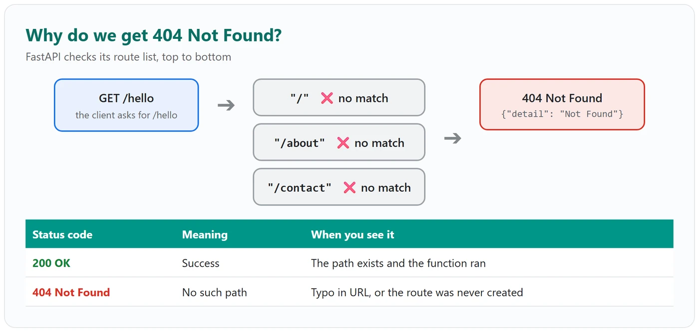
/About (capital A) and /about are different paths. A small typo gives you a 404.Uvicorn options: port and reload
Change the port
By default Uvicorn uses port 8000. To use another port, add --port. First stop the server with Ctrl + C, then run:
uvicorn main:app --reload --port 8080Now open the new address:
http://127.0.0.1:8080/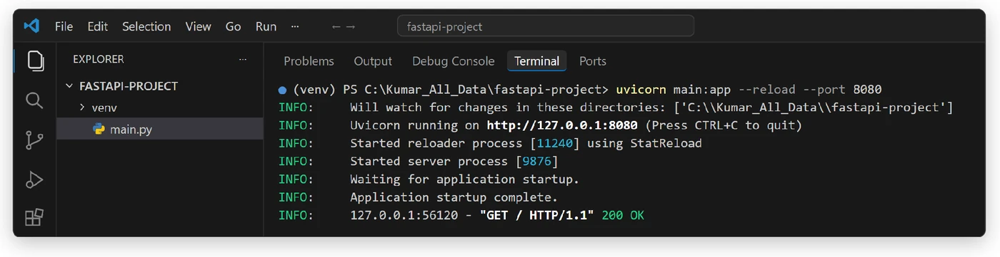
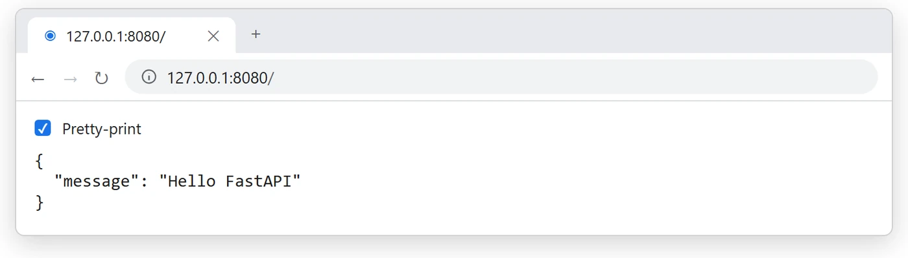
:8080.Changing the port is useful when port 8000 is already used by another program, or when you want to run two apps at once.
[Errno 10048] ... only one usage of each socket address, another program is already using that port. (On Linux/macOS it reads [Errno 98] Address already in use.) Pick a different port number.Understand --reload
Go back to port 8000 (uvicorn main:app --reload). Now change the message in home() from:
return {"message": "Hello FastAPI"}To:
return {"message": "Welcome to FastAPI"}Save the file (Ctrl + S) and watch the terminal. Uvicorn notices the change and restarts by itself. Refresh the browser and the new message appears:
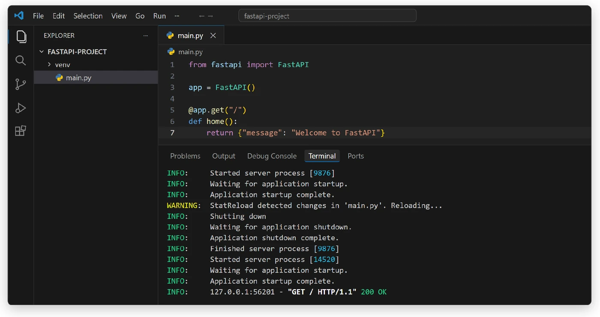
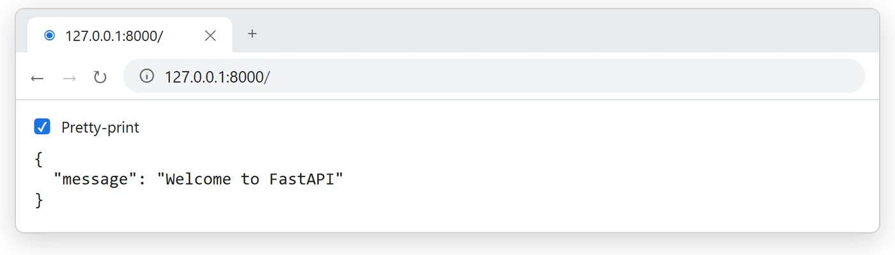
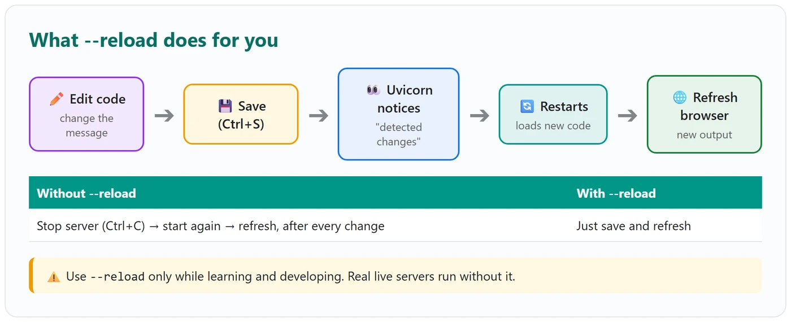
--reload: stop, start again, refresh after every change. With it: just save and refresh.Basic project structure
So far everything lives in one file:
fastapi-project/
│
├── venv/
└── main.pyThat is perfect for learning. But real applications have dozens of routes (users, products, orders, payments…). If all of them sit in one main.py, the file becomes very long and hard to manage. So we split the code into folders.
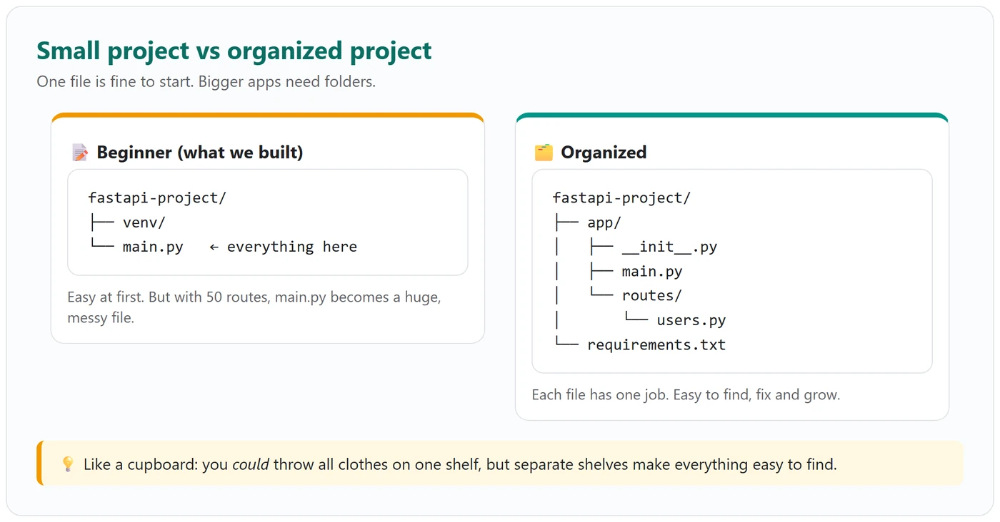
A common beginner-friendly structure looks like this:
fastapi-project/
│
├── app/
│ ├── __init__.py
│ ├── main.py
│ │
│ └── routes/
│ └── users.py
│
└── requirements.txtFor now, only understand why each item is there. You will put code in routes/ in a later module.
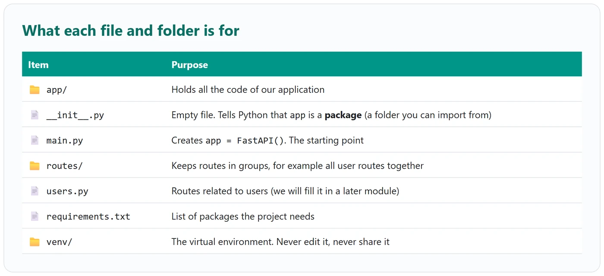
venv/.Move the application into the app package
Let’s organise the project. Do these steps:
- 1Create a foldernamed
appinsidefastapi-project. - 2Add an empty
__init__.pyinsideapp. - 3Move
main.pyinto theappfolder, so it becomesapp/main.py. - 4(Optional)create
app/routes/users.pyand leave it empty for now.
The code inside main.py stays exactly the same. Now, what happens if you run the old command?
uvicorn main:app --reload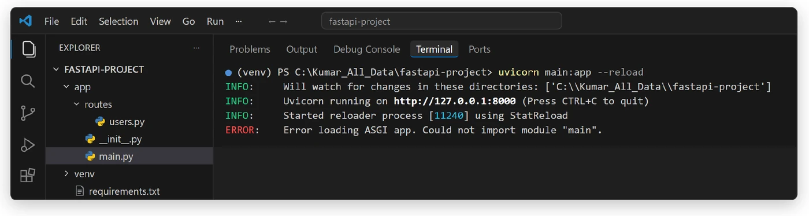
ERROR: Error loading ASGI app. Could not import module "main".Uvicorn says Could not import module "main". It is looking for main.py in the project folder, but you moved it into app/. Tell Uvicorn the new location:
uvicorn app.main:app --reload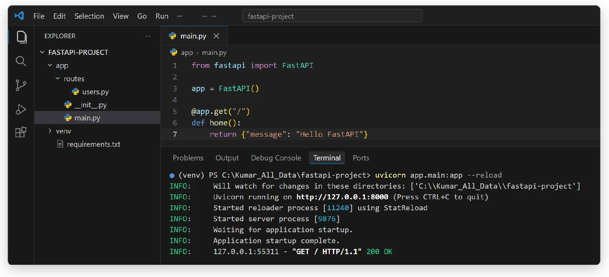
app.main:app the server starts again and GET / returns 200 OK.The app runs again, and http://127.0.0.1:8000/ shows the same response as before.
Reading app.main:app
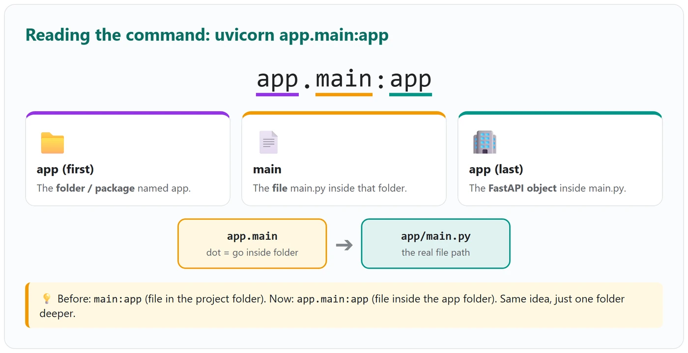
main:app (file in the project folder). Now: app.main:app (file inside the app folder). Same idea, one folder deeper.fastapi-project), not from inside the app folder. The import path app.main only makes sense from there.requirements.txt
Imagine your friend wants to run your project. How will they know which packages to install? You write them in a file called requirements.txt.
Create the file
pip freeze > requirements.txtpip freezelists every package installed in the venv, with its exact version.>saves that list into a file instead of printing it on the screen.
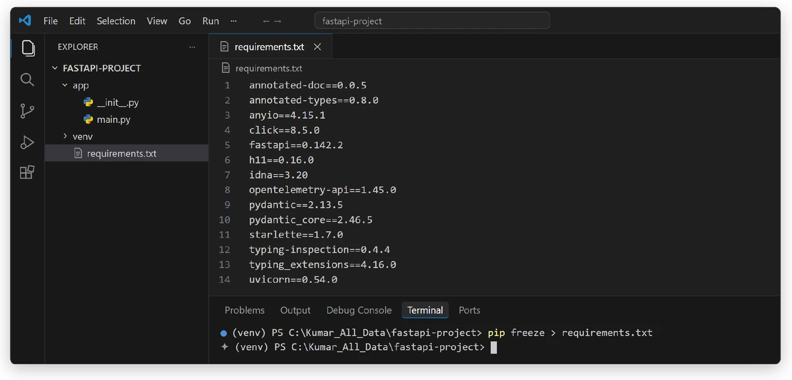
requirements.txt, the new requirements.txt lists 14 packages such as annotated-doc==0.0.5, anyio==4.15.1, fastapi==0.142.2, pydantic==2.13.5, starlette==1.7.0 and uvicorn==0.54.0" width="1400" height="674">package==version, for example fastapi==0.142.2. Your versions may differ.Each line has the form package==version, for example fastapi==0.142.2.
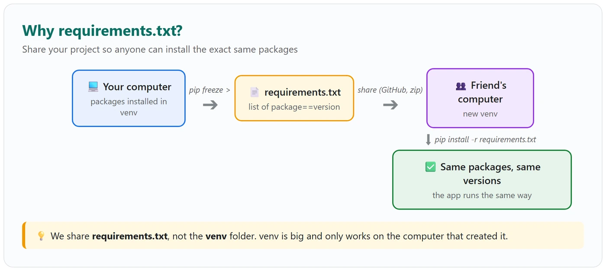
Install from the file
On a new computer (or a new venv), one command installs everything from the list:
pip install -r requirements.txt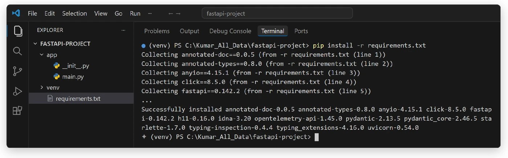
-r means read the package names from this file.
pip freeze > requirements.txt again whenever you install a new package, so the file stays up to date.pip install -r requirements.txt, uvicorn app.main:app” should be the entire setup. If it needs more, write it in the README.Final project: a Student API
Now build a complete small project on your own, from an empty folder. Final structure:
fastapi-project/
│
├── app/
│ ├── __init__.py
│ └── main.py
│
├── venv/
│
└── requirements.txtThe API must have these four routes:
| Route | What it returns |
|---|---|
GET / | A welcome message |
GET /student | Full student details: name, course, skills |
GET /course | Course name and duration |
GET /skills | List of skills |
Follow these steps
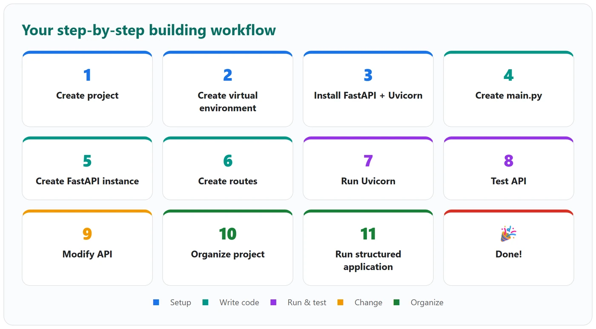
Setup commands
Windows (on Linux/macOS use source venv/bin/activate)
mkdir fastapi-project
cd fastapi-project
python -m venv venv
venv\Scripts\activate
pip install fastapi uvicornThen create the app folder with an empty __init__.py and the main.py file below.
from fastapi import FastAPI
app = FastAPI()
@app.get("/")
def home():
return {"message": "Welcome to the Student API"}
@app.get("/student")
def student():
return {
"name": "Rahul",
"course": "BCA",
"skills": ["Python", "FastAPI", "SQL"]
}
@app.get("/course")
def course():
return {"course": "BCA", "duration": "3 Years"}
@app.get("/skills")
def skills():
return {"skills": ["Python", "FastAPI", "SQL"]}Run it and test all four routes
uvicorn app.main:app --reload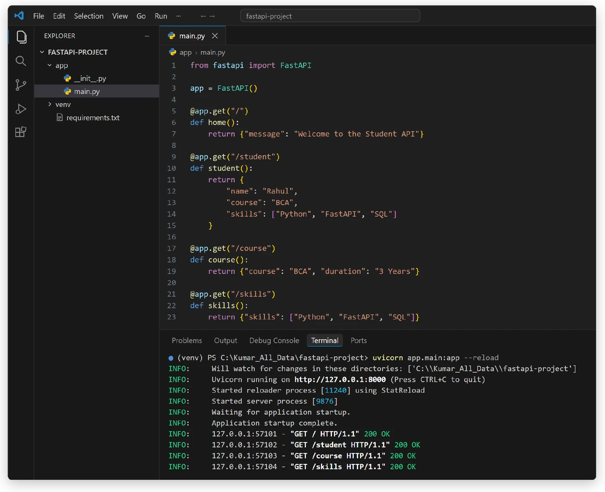
app/main.py, and four 200 OK lines, one per route.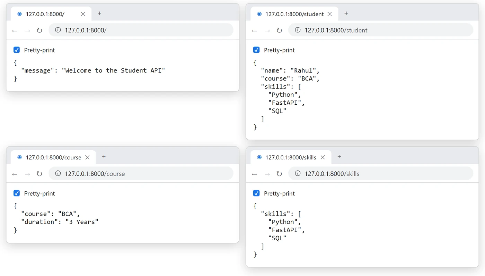
/, /student, /course and /skills.Notice how the Python list ["Python", "FastAPI", "SQL"] became a JSON array, and the dictionary inside /student became a JSON object.
Save the dependencies
pip freeze > requirements.txtTry it yourself
Change the student’s name to your own name and check that --reload picks it up.
Save the file, watch the terminal print “Reloading…”, then refresh /student.
Add a new route GET /college that returns your college name and city.
@app.get("/college") above def college(): return {"college": "...", "city": "..."}.
Visit /teacher (a route you did not create). What status code do you get, and why?
404 Not Found with {"detail":"Not Found"}, because no route matches /teacher.
Run the app on port 9000 instead of 8000.
uvicorn app.main:app --reload --port 9000, then open http://127.0.0.1:9000/.
Common mistakes and quick revision
| What you see | Why it happens | Fix |
|---|---|---|
uvicorn is not recognized | venv is not active, or Uvicorn is not installed | Activate the venv, then pip install uvicorn |
Could not import module "main" | Wrong file name, or running from the wrong folder | Check the file location. Use app.main:app if main.py is inside app/ |
Attribute "application" not found | The name after : does not match the variable in the file | Use the same name as in app = FastAPI() |
{"detail": "Not Found"} | The path does not exist or has a typo | Check the spelling of the path in @app.get(...) |
| Browser: “This site can’t be reached” | The server is not running | Start Uvicorn again and keep the terminal open |
| Change not visible in browser | Server started without --reload, or file not saved | Save the file, or restart with --reload |
Quick revision
| Command / code | Meaning |
|---|---|
python -m venv venv | Create a virtual environment |
venv\Scripts\activate | Activate it (Windows) |
pip install fastapi uvicorn | Install FastAPI and the server |
app = FastAPI() | Create the application instance |
@app.get("/path") | Create a route for a GET request |
uvicorn main:app --reload | Run app from main.py, auto-restart on save |
--port 8080 | Run on a different port |
uvicorn app.main:app | Run app from app/main.py |
pip freeze > requirements.txt | Save the package list |
pip install -r requirements.txt | Install all packages from the list |
Final outcome
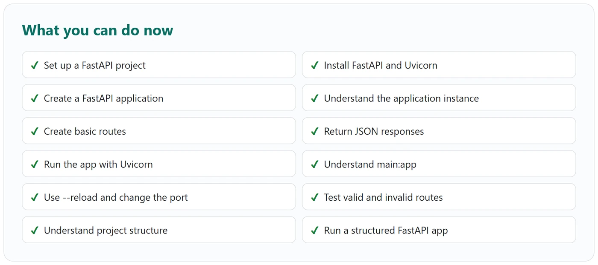
The learning pattern we follow:
Key terms
- FastAPI
- A Python framework for building APIs, where each endpoint is a normal Python function and return values are sent back as JSON automatically.
- Uvicorn
- The server program that listens for HTTP requests on a port and passes them to a FastAPI application.
- Backend
- The hidden part of an application that stores data and does the work; FastAPI is used to build it.
- Application instance
- The object created by
app = FastAPI(); it holds every route and setting and is what Uvicorn runs. - Route
- A connection between an HTTP method plus URL path, such as
GET /about, and the Python function that handles it. - Decorator (@app.get)
- The line above a function that registers it with the app as the handler for a given method and path.
- localhost (127.0.0.1)
- The address that always means “this computer”, used to reach a server running on your own machine.
- Port
- A numbered door on a computer where a server listens; Uvicorn uses 8000 unless you pass
--port. - --reload
- A Uvicorn option for development that restarts the server automatically whenever a code file is saved.
- 404 Not Found
- The status FastAPI returns, with
{"detail":"Not Found"}, when no route matches the requested path. - app.main:app
- Uvicorn’s target format: the import path of the module (
app/main.py), a colon, then the name of the FastAPI variable inside it. - __init__.py
- A file (often empty) that marks a folder as a Python package, so its modules can be imported with dotted paths.
Self-check
Pick an answer. You’ll see right away whether it’s correct and why.
What is the job of Uvicorn?
- It defines the routes
- It runs the app as a server and passes requests to FastAPI
- It converts Python dicts to JSON
- It creates the virtual environment
FastAPI is where you build the API; Uvicorn is the server that listens on a port and hands each request to it.
You run python main.py on a file with only app = FastAPI(). What happens?
- A server starts on port 8000
- It raises an error
- Nothing is printed; the app is created but not served
- The browser opens
Creating the app object doesn’t start a server. You need uvicorn main:app for that.
In uvicorn main:app, what does the part after the colon refer to?
- The variable holding
FastAPI()inside main.py - The folder name
- The port
- The function for the home route
Before the colon is the module (main.py); after it is the name of the FastAPI object in that module.
Your route function returns {"age": 21}. What does the browser receive?
- The text
age=21 - An HTML page
{"age": "21"}with 21 as a string- A JSON object where 21 is a number
FastAPI converts the dict to a JSON object and keeps numbers as numbers.
You visit /About but your route is @app.get("/about"). What do you get?
- The about page
- 404 with
{"detail":"Not Found"} - 500 Internal Server Error
- A redirect to /about
Paths are case-sensitive and must match exactly, so no route is found.
You moved main.py into an app/ package. Which command now works from the project folder?
uvicorn main:appuvicorn app:mainuvicorn app.main:appuvicorn app/main.py
The module path is app.main (folder.file), followed by :app for the variable.
Uvicorn says the address is already in use. What is the simplest fix?
- Run on another port with
--port 8080 - Remove
--reload - Rename main.py
- Reinstall FastAPI
Another program holds port 8000; choosing a free port lets your server start.
You edit a route, save, and refresh, but the old response still shows. The terminal shows no “Reloading”. Most likely cause?
- FastAPI caches responses forever
- The browser is offline
- The route needs a POST
- The server was started without
--reload
Without --reload, Uvicorn keeps running the old code until you restart it.
All of it, in one sentence
Create a venv, install FastAPI and Uvicorn, make app = FastAPI(), attach functions with @app.get(...), and run uvicorn app.main:app --reload: every request then flows browser → Uvicorn → FastAPI → your function, and whatever you return comes back as JSON.
— Vishwa Mohan